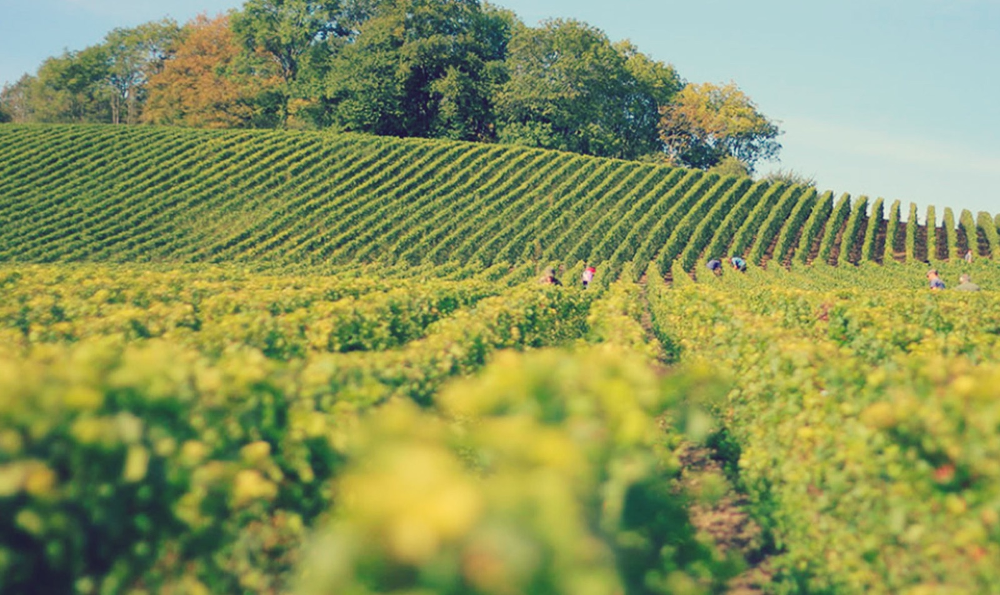

High Environmental Value
HVE: the estate in the official directory.
HVE certification corresponds to level 3 of the environmental certification for French farms. It is based on result indicators covering biodiversity, crop protection strategy, fertilisation and irrigation.
- EstateSCEA Domaine de la Grande Versenne
- Address30 rue d’Angoulême, 16200 Triac-Lautrait
- ActivityViticulture
- HVE date23/12/2024 in the HVE directory dated 01/06/2025